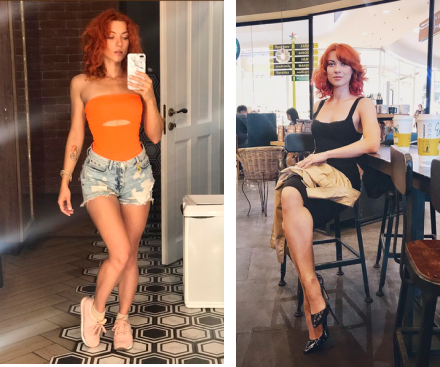

Buenos días, me llamo Cata. Tengo 28 años. Llevo una vida no muy activa y tengo sobrepeso (mido 170 cm, peso 90 kg).
Decidí tomar un curso de Fortunella por recomendaciones de mi prima. Tengo previsto tomarlo durante un mes, luego veré los resultados. Para mejor resultado, hice lo siguiente:
• Cambié mi alimentación, voy a tomar más pescado cocido, carne sin grasa, fruta y verdura. Si tengo ganas de comer dulces, comeré un poco de muesli o pasas;
• Empezaré a tomar más agua. Usare agua potable pura, sin sustituirlo por el café ni gaseosa;
• Empezaré a hacer ejercicio físico moderado.
Las medidas de control y mi estado lo describiré durante el mes que viene, espero que todo salga bien. A propósito, el embalaje es guay, Fortunella parece a los quemadores de grasa deportivos, solo el contenido es mucho más sano y natural.
3249
Estoy tomando durante 4 días Fortunella. Al parecer, no es mucho tiempo, pero ya veo cambios notables en mi cuerpo. He perdido 3 kilos en 4 días y veo que esto pasó sin demasiados esfuerzos, mucho ejercicio ni dietas de hambre. Los primeros días era complicado rechazar mi comida favorita, pero luego poco a poco empecé a alimentarme bien. Las gotas las tomo siguiendo las instrucciones, sin subir ni bajar la dosis del aditivo alimentario. Me siento bien. A diferencia de otros fármacos y remedios, no tengo mareas ni edemas. Ya veo que los michelines se reducen, así como el viente, desaparecen los edemas.
1280
Reprocho a mí misma por haberme relajado en el cumpleaños de mi amiga y me permití comer una ensalada rica de carne, tartaletas con salmón y un poco de embutidos. Pensé que enseguida tendría un kilo o dos de mas, pero el resultado es estable y me gusta. Perdí 4 kilos más con Fortunella. Qué bien, es realmente guay.
Ahora peso 83 kilos y es más fácil caminar. Hasta intenté correr un poco por la mañana y subir la escalera a la planta 8. Era un poco duro, pero lo conseguí. La piel sigue siendo firme, las caderas disminuyeron notablemente, apareció la cintura y el cuello sin papada. Sigo tomándolo.
5482
Esta vez no hice ninguna excepción en cuanto a la alimentación, hasta el día de mi cumpleaños rechacé la comida rica. Sigo tomando igual las gotas Fortunella. Me siento muy bien. Además, apareció una ligereza y seguridad en mí misma. Esta vez el resultado es aun más guay. Perdí 5 kilos más junto con el mismo. Parece mentira, nunca he pensado que algún día pesaría 78 kilos.
Si no recuerdo mal, siempre pesaba 90-93 kilos como mínimo, y eso siempre con dietas muy estrictas y dietas de hambre, y luego el peso siempre volvía otra vez. A veces tengo días de dieta menos estricta me permito hasta un poco de chocolate o mis plátanos favoritos.
4256
Conseguí lo que quería. La báscula me alegra siempre con sus cifras bajas. ¡Qué bien, otros 4 kilos menos! Después de la última medición de control pasaron dos meses. Hasta principios de mayo perdí 16 kilos enteros junto con Fortunella y peso 74 kg. Decir que estoy sorprendida es no decir nada. Veo mis fotos antiguas y no me reconozco en las mismas. ¿Qué puedo decir sobre los cambios?
Primero, los volúmenes se han reducido bastante. Apareció la cintura fina, las piernas esbeltas, Adelgazaron mucho los brazos y las caderas. Desapareció la papada y el contorno de la cara está más correcto y definido, como si hubiera hecho un tratamiento quirúrgico de belleza, aunque no es así. Cambié las prendas de mi guardarropa completamente, al deshacerme de vestidos viejos de talle única, blusas y faldas. Además, durante este periodo empecé a sentirme mejor. Tengo menos resfriados, mi pelo parece más sano (más firme, brilla), no se me estropean las uñas, lo cual era un problema para mí. Actualmente estoy muy contenta con mi peso.

6062


Comentarios
Enviar
Es un remedio real que ayuda para controlar el peso. Mi madre me compró Fortunella. por supuesto, me ofendí pensando qué tontería es, ¿será que estoy gorda? Me pesé y pesaba 85 kilos. Me miré en el espejo con ropa interior y vi que tenía un poco de barriga, celulitis y michelines por los dos lados. Mido 175 cm y es sobrepeso se nota. Tomé las gotas durante dos meses y, como resultado, tengo 12 kg menos. ¡Me veo muy bien!
ContestarOlivia Bueno, eso depende. A mí personalmente no me ayudó, lo tomé durante una semana y lo dejé. Perdí solo dos kilos. ¿Dónde está el efecto milagroso?
ContestarModerador Alejandro ¡Buenos días! Gracias por Su mensaje. ¿Podría comentar cómo se alimentaba al tomar Fortunella?
ContestarOlivia Me alimentaba como siempre. Puedo cenar después de las 9 de la noche, me gustan los dulces, el pescado ahumado, a veces me permito una cerveza.
ContestarModerador Alejandro Vd. debe corregir Su sistema de alimentación, al excluir la harina, lo salado, lo frito, la gaseosa y de alcohol. Empiece a tomar pescado cocido sin grasa, carne, fruta y verdura y notará el resultado.
ContestarOlivia Intenté hacer lo que Vd. aconsejaba y cambié mi dieta. Todo empezó a funcionar más rápido. ¡Gracias!
ContestarAna Y a mí me gustó el efecto de Fortunella. Es que si Vd. no deja de comer constantemente, no cambia de hábitos alimenticios y no practica deporte, por supuesto, el peso no se recuperará. Conseguí perder 10 kilos con este remedio. Anteriormente tomaba otro aditivo alimentario que tenía muchos efectos secundarios. Tuve alergia, vértigos, el sobrepeso desaparecía y luego volvía aún más, y esta vez todo es perfecto.
ContestarConsuelo ¿Podría decir qué contienen las gotas? ¿Qué ingredientes, qué características útiles tienen?
ContestarModerador Alejandro ¡Buenos días! Gracias por Su mensaje. Las las gotas Fortunella contienen solo los componentes comprobados y sometidos a pruebas clínicas, tales como: Forskolina o labdano diterpeno. Uno de los componentes clave que provoca la descomposición rápida de grasas al quitarlas del cuerpo; - Picolinato de cromo. Un componente mineral importante que mantiene el balance hormonal y metabólico;
Contestar- Extracto de pimiento de cayena. Regula el control del apetito y permite quemar los tejidos de grasa.
- L-carnitina, un microelemento que tiene propiedades de regeneración y rejuvenecimiento;
- Un extracto de wasabi que tiene propiedades inmunoestimulantes.
Recomendamos el fármaco a los que no solamente desean perder el peso de forma eficaz, sino se somete a las cargas físicas constantes. ¿Qué puede alcanzar uno al tomar Fortunella? - Quemar las calorías que sobran
- Bajar de peso
- Normalizar los procesos metabólicos y endocrinos en el cuerpo
- Aumentar y estabilizar el peso fisiológico normal del cuerpo
- Quitar los líquidos que sobran y los toxinas de Su cuerpo.
Además de un efecto evidente de quemar la grasa, Fortunella tiene propiedades antiedematosas, fitoncidas, de regeneración.
Consuelo ¿Está Vd. seguro de que el contenido no daña? Porque en publicidad siempre prometen todo lo mejor, y luego... Después de furosemida me sentí muy mal.
ContestarModerador Alejandro ¡Buenos días! Gracias por Su mensaje. Nuestro Fármaco Fortunella contiene solo los componentes naturales biológicamente activos combinados de tal forma que no afectan a la salud de forma negativa. No recomendamos tomar los fármacos como furosemida sin recomendación de Su médico. Primero, daña la reabsorción de iones de cloro y sodio, simplemente al deshidratar Su cuerpo. Intente adquirir Fortunella y comparte el resultado.
ContestarConsuelo Resulta que Vd. lleva razón. Decidí comprar Fortunella y tomé un curso, perdí 7 kilos y los edemas se quitaron perfectamente. ¡Gracias, voy a seguir adelgazando!
Nerea Estoy contenta por haber adquirido Fortunella. Estas gotas fueron una verdadera salvación para mí. Facilmente y sin mucho esfuerzo perdí 15 kilos. Chicas, es un milagro. Nunca me he visto tan guapa en los últimos 10 años. Mi marido me mira con admiración, en el trabajo todos están sorprendidos por los cambios. Finalmente puedo permitirme llevar la ropa que me daba no sé qué poner porque tenía sobrepeso. Todo guay.
ContestarVictoria También tuve problemas de sobrepeso desde el colegio donde siempre se reían de mí, Mis padres me decían que aun así soy guapa y encantadora. En la universidad los chicos nunca me hacían caso porque no tenía nada que ver con mis amigas esbeltas y guapas. Viví hasta 25 años, siempre comiendo dulces, hasta que una amiga me propuso adelgazar juntas con Fortunella.
ContestarSabe Vd., es un sentimiento increíble, muy guay y poco usual, cuando uno se adelgaza, se ve mejor, nota cambios tanto internos como externos. Dos meses después de tomar Fortunella no me reconocí en el espejo, ya era otra. Segura de sí misma, guapa, esbelta. ¡Gracias!
Moderador Alejandro ¡Buenos días! Gracias por Su mensaje. Estamos contentos de que Fortunella le haya ayudado!
Contestar